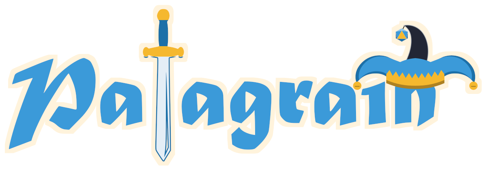

<!DOCTYPE html>
<html lang="fr">
<head>
<meta charset="UTF-8">
<title>Scène — Jeu</title>
<link rel="stylesheet" href="../css/theme.css">
<link rel="stylesheet" href="../css/composants.css">
<link rel="stylesheet" href="../css/bouffon.css">
<style>
  .signature { position: absolute; top: 30px; }
  /* Le bouffon sous son chapeau : tout ce qui est sous le haut du cadre de la cam est caché */
  .jeu-cache { position: absolute; overflow: hidden; pointer-events: none; }
  .jeu-bouffon { position: absolute; }
  .jeu-bouffon .bouffon-svg { width: 100%; height: auto; }
  .signature img { height: 60px; filter: drop-shadow(0 3px 6px rgba(0, 0, 0, .35)); }
</style>
</head>
<body>
<!--
  Scène « Jeu » : le jeu en plein écran SOUS cette source, petite cam dans un coin.
  Position de la cam (par défaut en bas à droite) : x 1450 · y 740 · 420 × 236 px
  Changer de coin : jeu.html?cam=bas-gauche  (ou haut-gauche, haut-droite, bas-droite)
  Le chat se place automatiquement du côté opposé à la cam.
  Le chapeau posé sur la cam est celui du bouffon : de temps en temps (config.js › bouffon.jeuToutesLes)
  et à chaque follow, il se lève dessous, passe la tête, regarde à gauche, à droite, clin d'œil, et redescend.
  Options : ?chat=0 · ?bandeau=0 · ?bouffon=0
  (ouvre jeu.html?apercu=1 pour voir les zones, ?test=1 pour de faux messages)
-->
<div id="ecran"></div>

<script src="https://cdn.jsdelivr.net/npm/@streamerbot/client/dist/streamerbot-client.js"></script>
<script src="../config.js"></script>
<script src="../js/commun.js"></script>
<script src="../js/evenements.js"></script>
<script src="../js/chat.js"></script>
<script src="../js/bouffon.js"></script>
<script src="../js/numeros.js"></script>
<script src="../js/composants.js"></script>
<script>
  const ecran = document.getElementById('ecran');
  const coin = Commun.params.get('cam') || 'bas-droite';
  const L = 420, H = 236;
  const droite = coin.includes('droite'), bas = coin.includes('bas');
  const CAM = { x: droite ? 1920 - 50 - L : 50, y: bas ? 1080 - 104 - H : 130, l: L, h: H };
  const CHAT = { x: droite ? 50 : 1920 - 50 - 440, y: 470, l: 440, h: 440 };

  const voir = cle => Commun.params.get(cle) !== '0';
  const bouffon = Commun.bouffon();

  Composants.zoneApercu(ecran, { x: 0, y: 0, l: 1920, h: 1080 }, 'Jeu plein écran', true);
  if (bouffon) {
    // Le bouffon, dont on ne voit au repos que le chapeau posé sur le haut du cadre (coupé à y = 187 du dessin)
    const bord = Math.max(7, Math.min(12, Math.min(L, H) * 0.022));   // épaisseur du cadre (comme Composants.cadre)
    const haut = CAM.y - bord, larg = 0.455 * L, s = larg / 400;
    const cache = Composants.creer(ecran, 'jeu-cache', '<div class="jeu-bouffon"></div>', { x: CAM.x - 200, y: 0, l: L + 400, h: haut });
    const perso = cache.firstElementChild;
    Object.assign(perso.style, { width: larg + 'px', left: 200 + L / 2 - larg / 2 + 'px', top: haut - 287 * s + 'px' });
    // il sort la tête jusqu'au menton… sauf si la cam est en haut : le chapeau ne doit pas sortir de l'écran
    perso.style.setProperty('--leve', Math.max(50 * s, Math.min(143 * s, haut - 181 * s - 4)) + 'px');
    const CB = CONFIG.bouffon || {};
    Numeros.coucouJeu(perso, { toutesLes: CB.jeuToutesLes ?? 60 });
    if (CB.jeuAuFollow !== false) Evenements.ecouter(e => { if (e && e.type === 'follow') perso.sortir(); });
    if (Commun.params.has('test')) setTimeout(perso.sortir, 1500);    // en test : une sortie tout de suite
  }
  Composants.cadre(ecran, CAM, { nom: false, chapeau: !bouffon });
  if (voir('chat')) Composants.chat(ecran, CHAT, { flottant: true, disparition: 45 });
  if (voir('bandeau')) Composants.bandeau(ecran, { x: 560, y: 1000, l: 800, h: 64 }, { compact: true });
  // Petit logo discret en haut, du côté opposé à la cam
  Composants.creer(ecran, 'signature', '').style[droite ? 'left' : 'right'] = '50px';

  Commun.demarrer();
  Evenements.demarrer();
</script>
</body>
</html>
